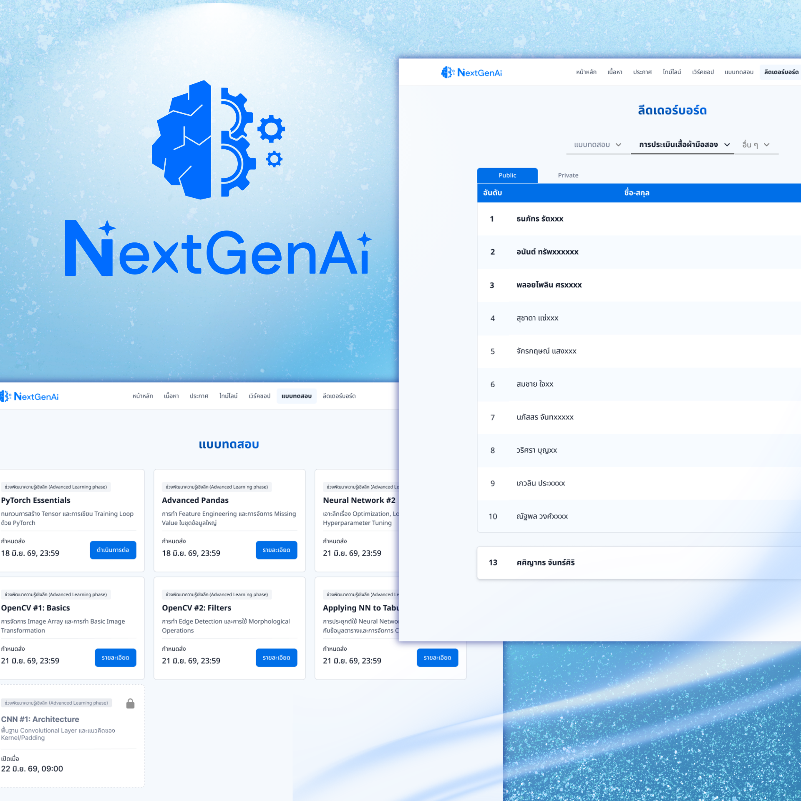
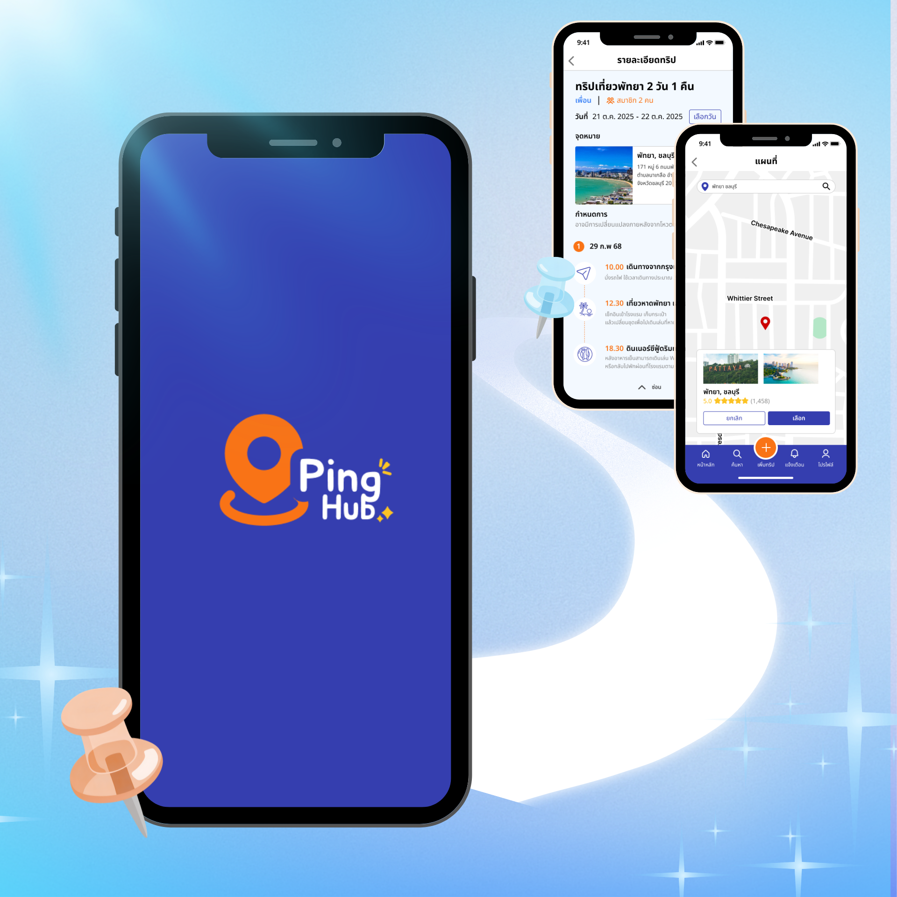
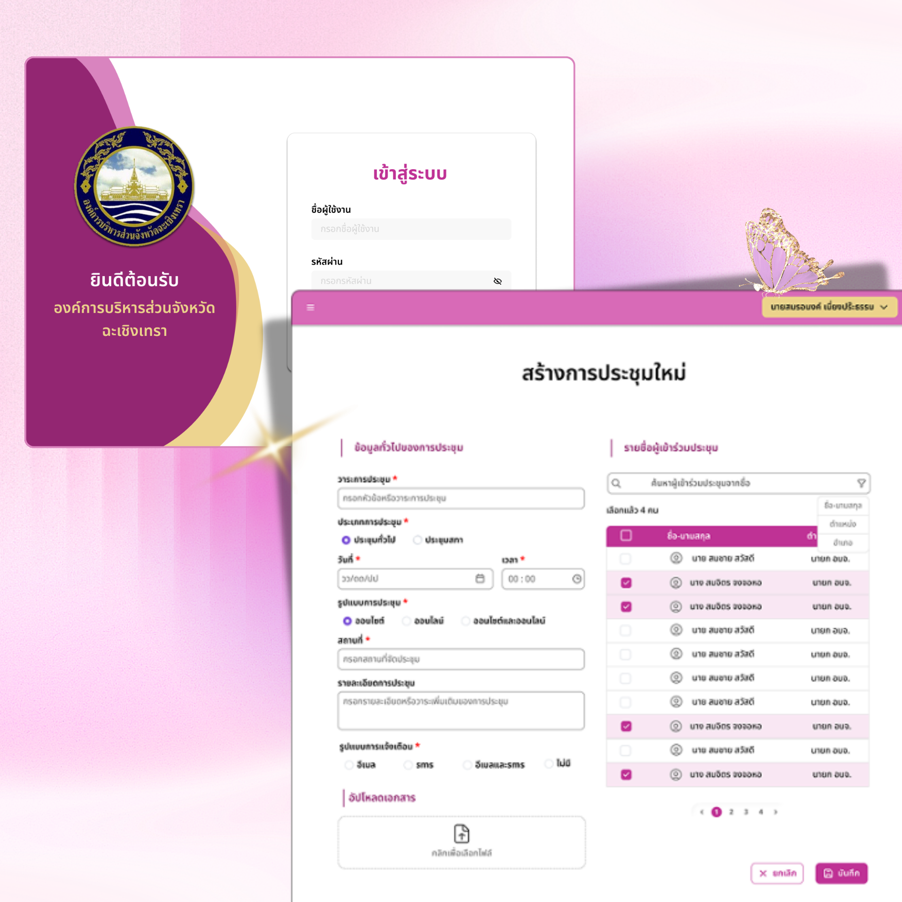
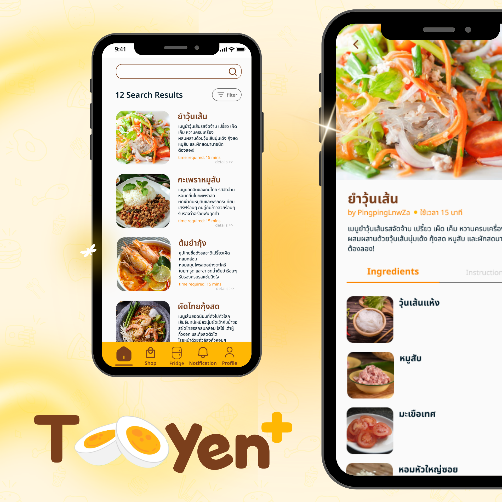

I design, test, and redesign — until it actually works.
UX/UI Designer and 4th-year student at KMITL who turns real user feedback into better products. UX/UI Designer · 4th-year student at KMITL
- 4 case studies
- Real usability testing
Case Study Preview

NextGen AI
Built the student experience from scratch for a 1,000+ participant AI education camp — then proved it worked through three rounds of real-world iteration, not a single guess.
Individual role · Team of 3

PingHub
A trip-planning app for friend groups who can never agree — usability tested end-to-end, with real fixes shipped before final delivery.
Individual role · Team of 4

PAO
A custom system for a provincial government office — built from real stakeholder interviews and defensible trade-offs, not assumptions about what's "modern."
Individual role · Team of 8

Tooyen+
An app for cutting food waste and mealtime decision fatigue — born from my own dorm-room grocery mistakes, refined through self-critique across multiple redesigns.
Individual role · Team of 6